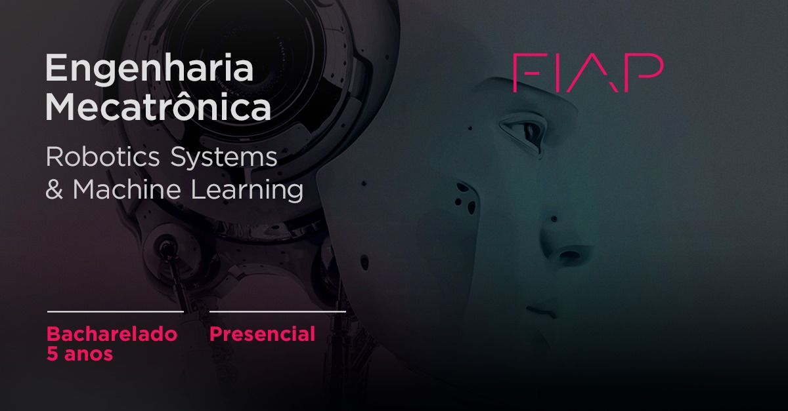

Cursos da Fiap

uma das profissões mais promissoras do mercado, tanto em época de crise como em momentos positivos da economia. Para ganhar competitividade, toda empresa precisa desenvolver e implantar sistemas automatizados, utilizando tecnologias exponenciais. Por isso, a Mecatrônica surge como uma área emergente da Engenharia que ajuda a encontrar soluções originais, integrando Engenharia Elétrica, Engenharia Mecânica, Ciência da Computação, Engenharia de Controle e Tecnologia da Informação. Nosso curso proporciona a investigação, concepção e implementação de produtos e processos inteligentes e inéditos dentro da Engenharia. Com o objetivo de solucionar problemas reais, você vai criar e realizar um projeto “hands on” por ano, utilizando tecnologias disruptivas como: Inteligência Artificial, Robótica, Sensores, Design, Sistemas Embarcados e Energias Alternativas. Transformar as empresas, aliando empreendedorismo, criatividade e design thinking. Este é o Engenheiro Mecatrônico que a FIAP quer formar.
uma das profissões mais promissoras do mercado, tanto em época de crise como em momentos positivos da economia. Para ganhar competitividade, toda empresa precisa desenvolver e implantar sistemas automatizados, utilizando tecnologias exponenciais. Por isso, a Mecatrônica surge como uma área emergente da Engenharia que ajuda a encontrar soluções originais, integrando Engenharia Elétrica, Engenharia Mecânica, Ciência da Computação, Engenharia de Controle e Tecnologia da Informação. Nosso curso proporciona a investigação, concepção e implementação de produtos e processos inteligentes e inéditos dentro da Engenharia. Com o objetivo de solucionar problemas reais, você vai criar e realizar um projeto “hands on” por ano, utilizando tecnologias disruptivas como: Inteligência Artificial, Robótica, Sensores, Design, Sistemas Embarcados e Energias Alternativas. Transformar as empresas, aliando empreendedorismo, criatividade e design thinking. Este é o Engenheiro Mecatrônico que a FIAP quer formar.